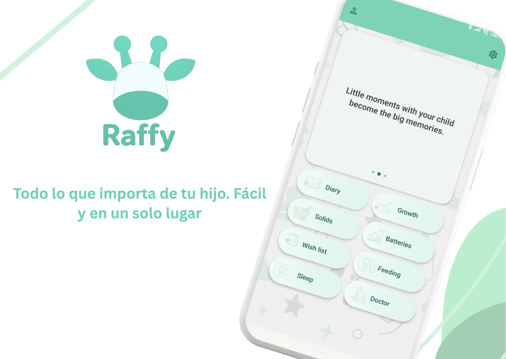
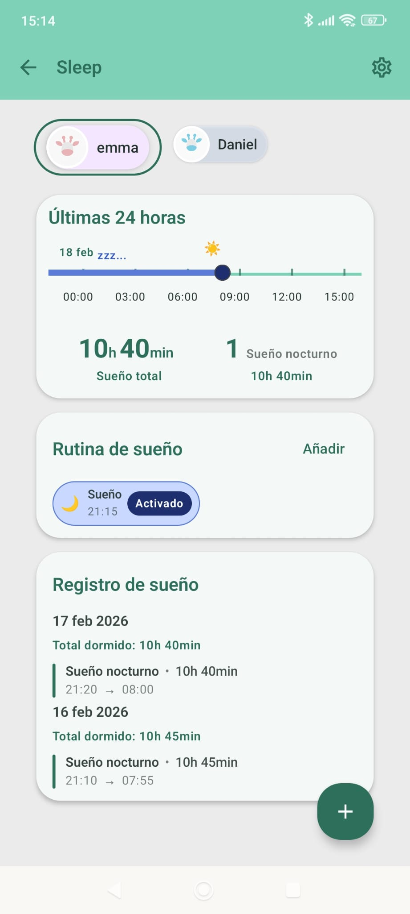
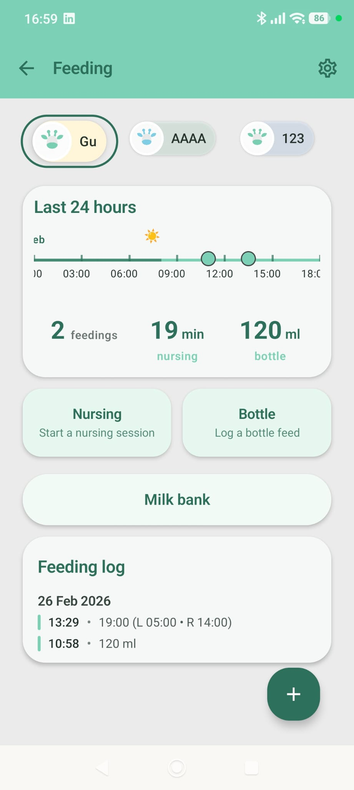
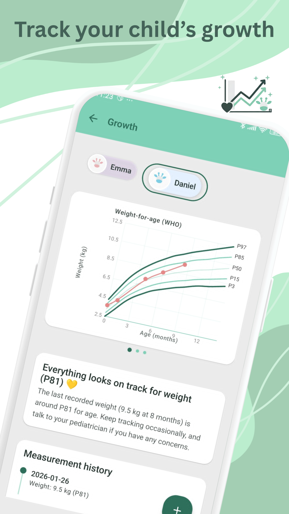
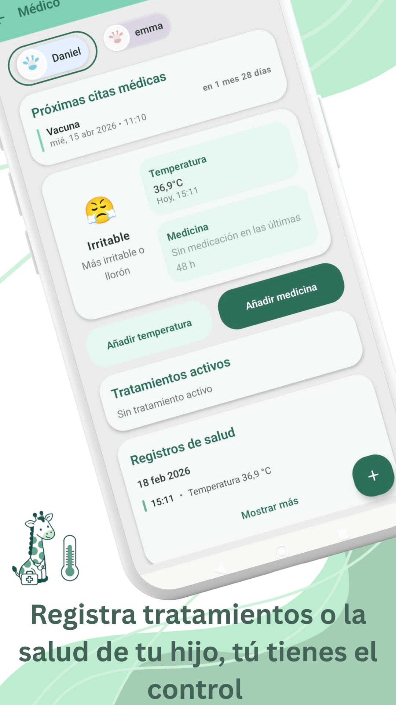

En esta página · 11 secciones
En breve
Raffy es una app Android gratuita de seguimiento del bebé: sin premium, sin anuncios y sin compras dentro de la app. Solo está disponible para Android, en español, inglés, francés y portugués, funciona sin conexión y sin cuenta, y tiene más de 50 descargas en Google Play a 4 de noviembre de 2026. Es educativa y no diagnostica; ante cualquier duda de salud, habla con tu equipo pediátrico.
Qué es Raffy
Raffy es una app Android gratuita que reúne en un solo lugar los registros de sueño, tomas, crecimiento, sólidos y salud de tu bebé. La desarrolla Gurru Labs, un estudio con sede en España.
Para quién es
- Madres, padres y cuidadores de bebés y niños pequeños que quieren un solo sitio para anotar sueño, tomas, crecimiento y notas.
- Familias que quieren recordatorios, una rutina diaria y un historial al que volver.
- Personas con móvil Android que buscan una app que funcione sin cuenta y sin conexión.
Sigue todo en Raffy
Sueño, tomas, crecimiento y rutinas en una sola app gratuita para Android.

Quién debería elegir otra app
- Quienes usan iPhone o iPad: Raffy es solo para Android.
- Familias que necesitan la app en un idioma distinto del español, inglés, francés o portugués.
Precio
Gratis: sin premium, sin anuncios y sin compras dentro de la app.
Funciones
- Sueño: registra siestas, hora de dormir y ventanas de vigilia, y consulta el total de 24 horas de siestas y sueño nocturno. Crea una rutina con horarios de siesta y de dormir, con recordatorios.
- Alimentación: registra biberones en ml o fl oz y lactancia con un temporizador izquierda/derecha que recuerda el último lado. Incluye un registro de 24 horas y un widget para la pantalla de inicio.
- Crecimiento: anota peso, longitud y perímetro cefálico y míralos en las gráficas de la OMS con curvas de percentiles de P3 a P97, con una nota en lenguaje sencillo.
- Medicación y pediatra: guarda citas, temperatura en °C o °F, medicamentos y dosis con la hora de la próxima toma, y un estado del niño en una sola cronología de salud.
- Sólidos: un plan de comidas, los alimentos que tu bebé ya ha probado, reacciones y un catálogo de alimentos.
- Además: un diario de fotos, un banco de leche materna, varios niños en una sola app y unidades métricas o imperiales.
Sin conexión y sincronización
Raffy funciona totalmente sin conexión y no necesita cuenta. Si decides iniciar sesión, tus datos se guardan en una copia de seguridad y se mantienen iguales en todos tus móviles, sincronizándose cuando vuelves a tener conexión.
Privacidad y tus datos
En Google Play, la sección Seguridad de los datos indica que no se comparten datos con terceros y que no se recopilan datos, según lo declarado por el desarrollador. Los datos se cifran en tránsito y puedes solicitar su eliminación. Las analíticas de uso se pueden desactivar en Ajustes. Lee la política de privacidad y cómo solicitar la eliminación de datos.
En Google Play
La ficha se llama «Raffy: Baby Tracker & Feeding», de Gurru Labs, en la categoría Crianza y con clasificación para todos los públicos. Tiene más de 50 descargas a 4 de noviembre de 2026. Última actualización en Google Play: 26 de octubre de 2026.
Capturas de pantalla




Herramientas web o app
Usa las herramientas web gratuitas para respuestas puntuales, como una estimación de percentiles de la OMS o un menú semanal para niños pequeños. Usa la app cuando quieras registros continuos, recordatorios e historial a lo largo del tiempo. En cualquier caso, revisa las tendencias con tu equipo pediátrico.
Abrir planificador semanal | Abrir calculadora OMS
Preguntas frecuentes
¿Raffy es gratis?
Sí. Raffy es gratis en Android, sin plan premium, sin anuncios y sin compras dentro de la app.
¿Hay versión para iPhone?
No. Raffy solo está disponible para Android, a través de Google Play. No hay versión para iPhone ni iPad.
¿En qué idiomas está Raffy?
La app está disponible en español, inglés, francés y portugués. Por ahora no tiene otros idiomas.
¿Raffy diagnostica problemas de salud?
No. Raffy es educativa y no diagnostica. Te ayuda a registrar y revisar las rutinas de tu bebé, pero no sustituye a tu equipo pediátrico. Si te preocupa la salud de tu bebé, habla con él.
Fuentes
- Google PlayRaffy: Baby Tracker & Feeding
- RaffyPágina de inicio de Raffy
- RaffyPolítica de privacidad
Hemos comprobado esta página con estas fuentes el 4 nov 2026. Es contenido educativo, no consejo médico. Política editorial